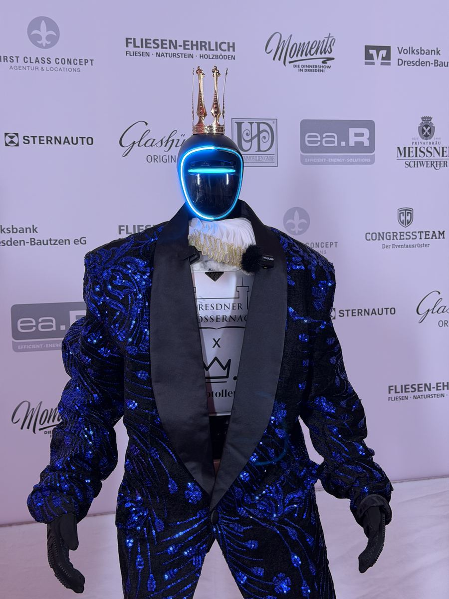

- Startseite
- Roboter mieten Innsbruck
Roboter mieten · Innsbruck
Roboter mieten in Innsbruck
Der Unitree G1 kommt nach Innsbruck und Tirol: in den Congress am Rennweg, auf das Messegelände, in ein Tagungshotel oder zu Ihrem Firmenevent. Operator, Transport und Branding sind im Preis.

Innsbruck: Kongresse zwischen den Bergen
Innsbruck ist Universitätsstadt, Kongressstadt und das Zentrum einer Region, die vom Tourismus und von alpiner Technik lebt. Zu Tagungen kommen Gäste aus dem ganzen Alpenraum, viele aus Italien, Deutschland und der Schweiz. Ein Roboter, der sie in ihrer Sprache begrüßt, ist der Moment, über den am Abend im Hotel gesprochen wird.
Wir bringen den Unitree G1 mit Operator nach Tirol. Ein Veranstaltungstag kostet ab 2.300 € netto, mit Transport, Branding und Haftpflichtversicherung. Eine Anzahlung gibt es nicht.
Congress und Messe Innsbruck
Congress Innsbruck
Im Kongresshaus am Rennweg begrüßt der Roboter die Teilnehmenden im Foyer, kündigt Vortragende an und steht in den Pausen für Fotos bereit. Bei wissenschaftlichen Kongressen legen wir einen sachlichen Auftritt fest. Die Aufgaben über einen Kongresstag beschreibt die Seite Kongress, Gala und Ball.
Messe Innsbruck
Auf Fachmessen für Seilbahn- und Alpintechnik oder für Gastronomie und Hotellerie arbeitet der Roboter am Stand: Er spricht Besucher an, nennt in einem Satz, was es zu sehen gibt, und übergibt an Ihr Team. Auf den Publikumsmessen im Frühjahr und Herbst ist er der Fotopunkt für Familien.
Olympiaworld
Großveranstaltungen, Sportevents und Firmenfeiern mit Bühne, auf der der Roboter eine Choreografie tanzt.
Für Tourismus, Handel und Industrie in Tirol
Saisoneröffnung eines Hotels, Jubiläum eines Familienbetriebs, Kundentag eines Herstellers: Der Roboter empfängt die Gäste, wechselt zwischen Deutsch, Italienisch und Englisch und trägt Ihr Logo mit QR-Code auf der Brust. Für Kundenabende mit besonderer Kulisse wird in Tirol gern in die Swarovski Kristallwelten in Wattens oder in die Hofburg Innsbruck eingeladen.
Praktisches für Veranstaltungen in den Bergen
Der Roboter braucht einige Quadratmeter ebene Fläche und eine gewöhnliche Steckdose. In Innenräumen arbeitet er überall, wo wir ihn hinbringen können, vom Tagungshotel im Tal bis zum Restaurant an der Bergstation. Im Freien braucht er einen trockenen, befestigten Untergrund. Der Operator ist die ganze Zeit dabei und hat Ersatzakkus mit.
Referenzen: Ball in Dresden und ein Abend im Freien

Bei der Dresdner Schlössernacht trug der Roboter Pailletten-Smoking und Krone und bewegte sich den Abend über zwischen den Gästen. Bei der Märchennacht im Dendrologischen Garten Przelewice arbeitete er nach Einbruch der Dunkelheit im Freien, im Licht von Scheinwerfern.
Sie planen eine Veranstaltung in Innsbruck? Termin und Preis anfragen.
Häufige Fragen
Ab 2.300 € netto für einen ganzen Veranstaltungstag, mit Operator, Transport, Branding und Haftpflichtversicherung. Bei mehrtägigen Messen oder Kongressen gibt es ab zwei Tagen 15 % Rabatt auf jeden Tag.
Ja. Wir kommen nach Innsbruck und in ganz Tirol, nach Hall, Wattens, Schwaz, Kufstein oder Seefeld. Der Transport ist im Preis enthalten.
In Innenräumen ja, sofern wir den Roboter hinaufbringen können. Im Freien braucht er eine trockene, ebene und befestigte Fläche. Schnee, Wiese und Schotter scheiden aus. Das klären wir vorab mit Ihnen.
Ja. Der Roboter spricht Deutsch und jede andere Sprache und wechselt während der Veranstaltung, etwa für Gäste aus Italien oder für internationale Kongressteilnehmer.